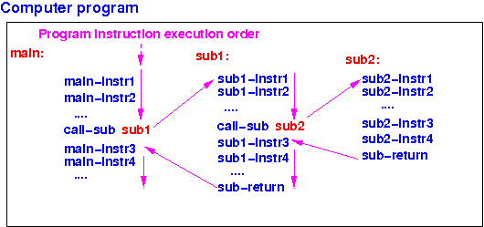

Review of subroutine
Subroutines
(a.k.a.:
functions,
procedures,
sub-programs,
methods):
- Other names for
subroutine are:
procedure,
function and
method
- Subroutine is
a
program unit that
can be
called (= invoked)
from anywhere in the computer program
- Program flow of
a subroutine call:
- When a subroutine is
called (= invoked),
the
program execution is
transfered to
the first instruction of
the subroutine
-
Program execution will
continue in the
subroutine until
the
subroutine
returns
- When the
subroutine
returns,
the
program execution will
continue
at the
statement
after
the subroutine call
|
|
Review of subroutine
Program flow:
main( ) calls
sub1( ) and
sub1( ) calls
sub2( )

The arrows
show you
the program execution order
(=
program flow) )
Important observation
Important observation:
- The
function return order
is
always the
reverse order
of the
function call order
|
Example:
If: Call order:
A( ) calls B( )
B( ) calls C( ) A --> B --> C --> D
C( ) calls D( )
Then: Return order:
D( ) returns to C( )
C( ) returns to B( ) D --> C --> B --> A
B( ) returns to A( )
|
I.e.:
function call/return order is:
Last In First Out (LIFO) !!
Programming principle: pick your data structure right !
Important
programming principle:
Therefore,
the
most efficient
implementation
for
the function call mechanism,
will use:
What will be discussed next ?
Order of
discussion:
- Why the
assembler instructions that you
have learned so far
cannot be used to
implement
subroutine call + return
- Introduce
3 new assembler instructions
to implement
subroutine call + return:
- bl
(branch and link)
- push
(push a value onto the system stack)
- pop
(pop a value off the system stack)
|
- Learn
how to
pass parameters
to
a function/subroutine
- Learn
how to
create and destroy local variables
in
a function/subroutine call
|
❮
❯